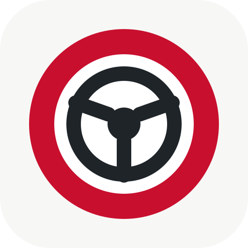

KjørerapportKlar for en tur?
Fest telefonen i holderen. Ledsageren starter og stopper opptaket.
Turer
Før du kjører
-
1
Fest telefonen
I en fast holder rett ved rattet. Ledsageren bruker telefonen, føreren rører den ikke under kjøring.
Føre i dagØver på i dagValgfrittEndre
Velg opptil tre. Rapporten sier etterpå om dere fikk det til.
-
2
Gi tilgang
Appen trenger posisjon og bevegelse. Alt lagres bare på telefonen.
-
3
Sjekker sensorene
- GPS-nøyaktighet 20 m eller bedre
- Bevegelsesdata
- Kameraet og kalibreringen
- Veikamera ser veien (test)
- Telefonen står stødig (anbefalt)
- GPS-nøyaktighet 20 m eller bedre
0,0 km
Ledsager: merk det dere vil snakke om etterpå
Rapport
Til trafikklæreren
Vis trafikklæreren hva som er øvd siden forrige kjøretime, eller del det som en melding.
Turer
Kamera
Kameraet ser om føreren sjekker speil og skulder, og bakkameraet ser bilen foran og feltlinjene. Bilder lagres aldri.
Sett telefonen i holderen der den står under kjøring, med ansiktet godt synlig. Korte blikk kan bli borte.
Tar rundt 30 sekunder. Telefonen leser opp hvor du skal se: rett fram, venstre speil, høyre speil og bakspeilet.
Ser ikke ansiktet
Veikameraet starter …
Trykk på et kamerabilde for å se hva appen ser, i full skjerm.
Siste blikk
- Se i et speil, så dukker det opp her.
Faresteder
Opplæring
Kjørerapport Pluss
Hva må du øve mer på?
Teori
Fremgang
Guider og tips
Korte veiledninger for elev og ledsager. Trykk på en for å lese den.
Innstillinger
Visning (midlertidig)
Se appen slik den blir for hver type bruker. Forsvinner før appen kommer i App Store.
Deg og mål
Elevene legger du til under fanen Elever.
Mål
Valgfritt. Sammenlignes med snittet av de tre siste turene. Tomt felt betyr ingen mål.
Under kjøring
Kamera
Rapporten
For fartsgrenser, kart og stedsnavn sendes rutens posisjoner til Statens vegvesen og Kartverket. Ingenting annet sendes, og turene lagres bare på denne telefonen.
Sikkerhetskopi
Én fil med alle turer, rådata og innstillinger (førere, mål, opplæringsplan, terskler). Gjenoppretting hopper over turer som finnes fra før.
Om appen
Fortell gjerne hva som stemte og hva som ikke stemte. Det er sånn appen blir bedre.
Avansertdemotur, vurdering, påminnelse i bilen, eksport og vedlikehold
Demotur
Se hvordan en tur ser ut uten å kjøre. En tenkt øvingstur spilles av gjennom opptaket i ti ganger fart (rundt et halvt minutt), med fartsgrensen på skjermen, og ender i en rapport.
Turen får merket «demo» og telles ikke med i oversikten og utviklingen. Du kan slette den etterpå.
Vurdering
Følsomhet
Hvor strengt hendelser skal vurderes. Gjelder også gamle turer.
Analysemotor
v3 (standard) måler bremsing og gass med akselerometeret, kalibrert mot GPS. v1 bruker bare GPS-farten, slik appen gjorde først.
Avanserte terskler
Grensene i m/s² før følsomheten over brukes. «Brå» gir lite trekk, «kraftig» gir mer. Endrer alle turer.
Påminnelse i bilen
iPhone kan minne deg på appen når telefonen kobler seg til bilens Bluetooth. Det settes opp én gang i appen Snarveier:
- 1Åpne Snarveier, velg Automatisering nederst og trykk +.
- 2Velg Bluetooth, velg bilen din og Kjør umiddelbart.
- 3Legg til handlingen Vis varsel med teksten «Husk Kjørerapport – fest telefonen i holderen».
- 4Trykk Ferdig. Neste gang du setter deg i bilen, kommer varselet, og du åpner appen fra Hjem-skjermen.
Bruk ikke «Åpne URL»: den åpner Safari, og der ligger ikke turene dine. Appen på Hjem-skjermen har sin egen lagring.
Data
Én tur
Rådata som JSON-fil, for eksempel til trafikklæreren.
Vedlikehold
Utvikler
Spiller demoturen gjennom opptakeren, lagringen og rapporten, som om sensorene leverte dataene.
Turene lagres bare på denne telefonen. Målingene er veiledende og erstatter ikke ledsager eller trafikklærer.
Kjørerapport versjon 0.15.0